Primary Sources
Explore the documents and photographs behind the family history. Open a record to examine its original pages and read its English text.
Wittelsberg
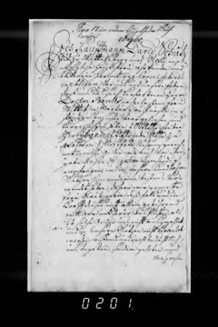
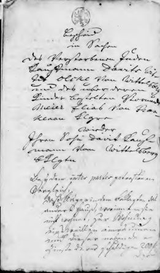
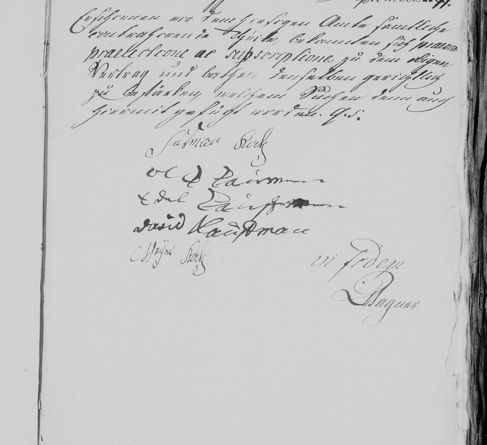
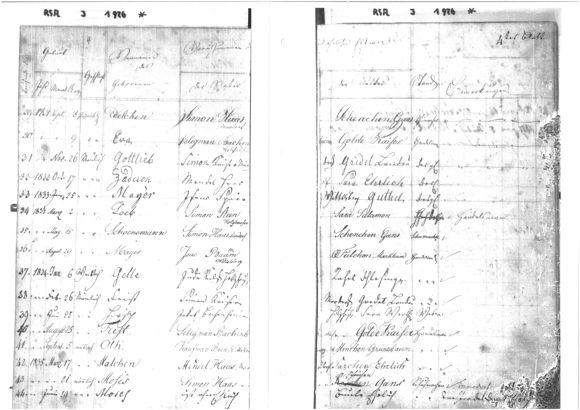
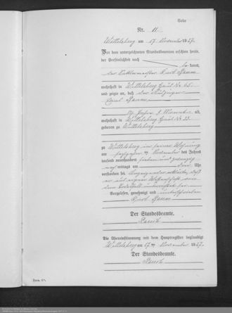
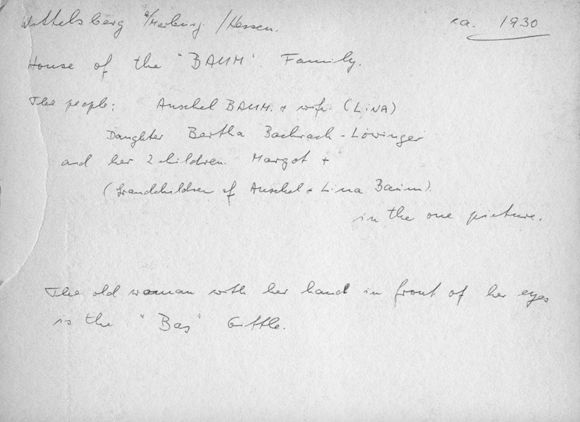
Frielendorf
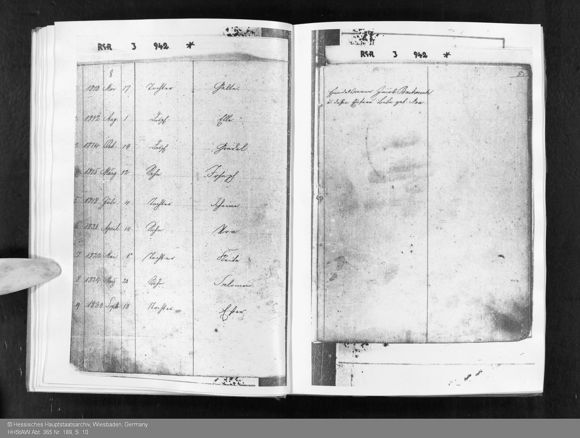
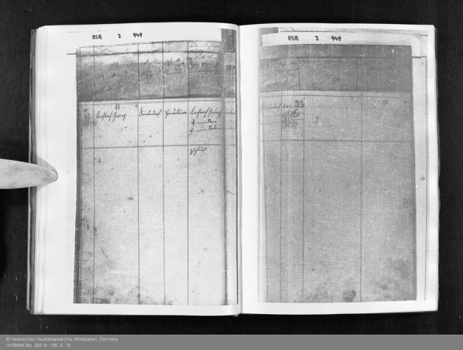
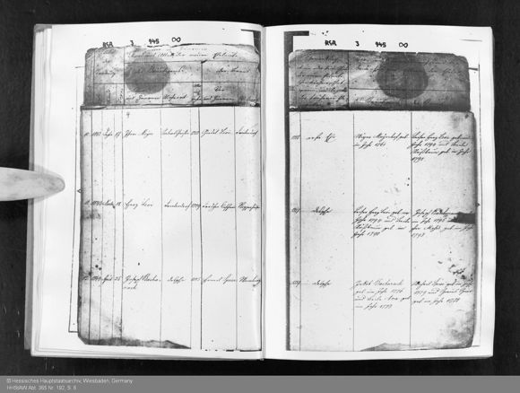
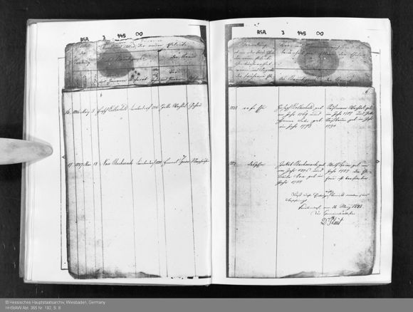
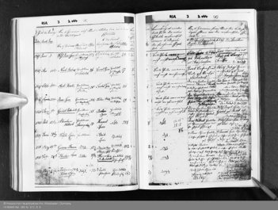
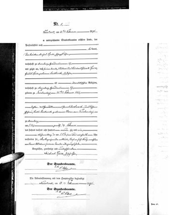
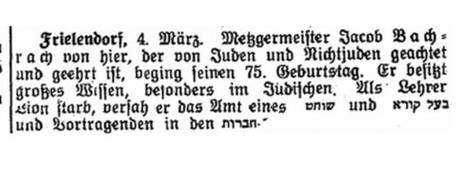
Margot and her family
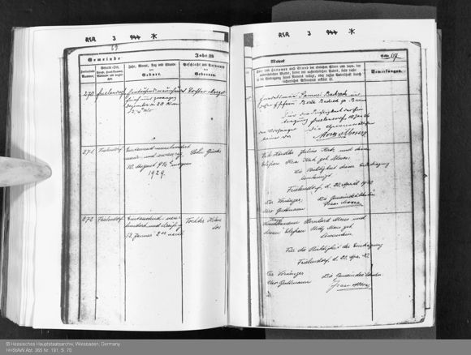
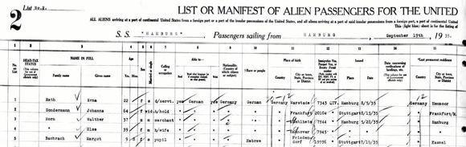
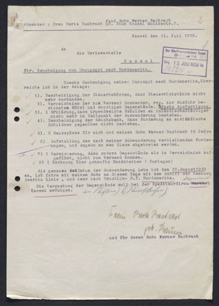
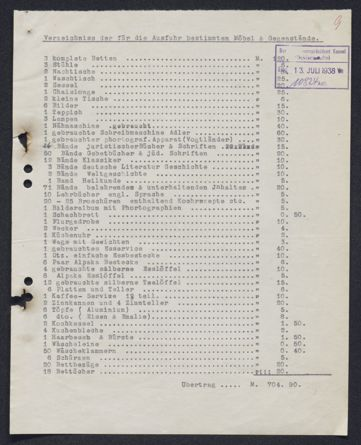
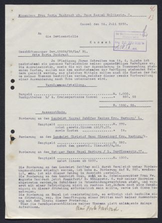
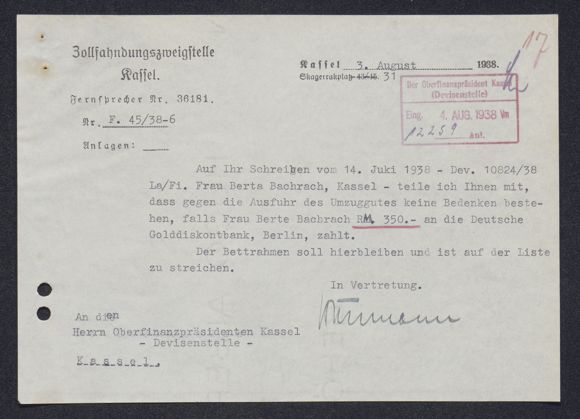
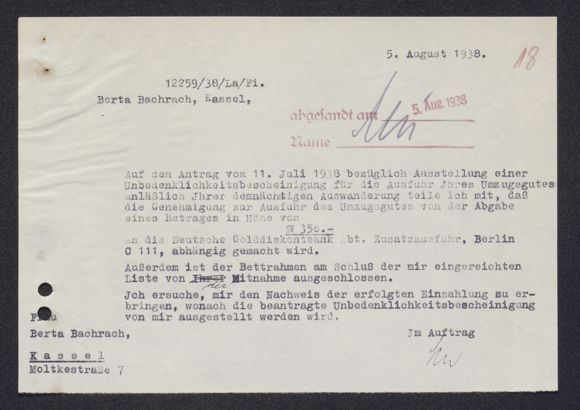
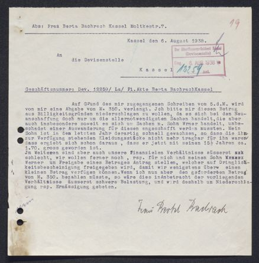
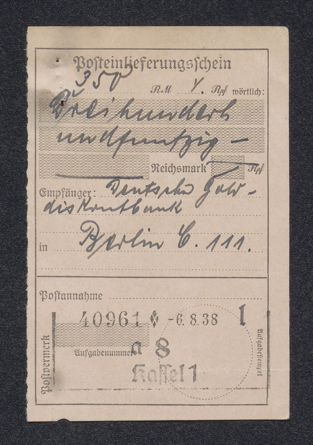
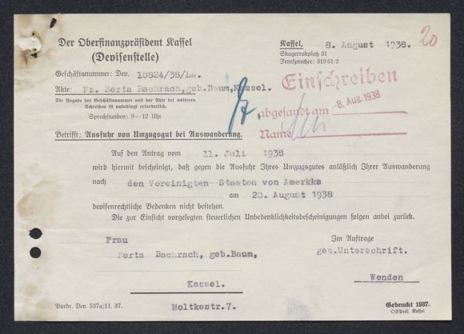
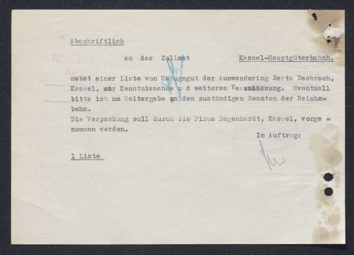
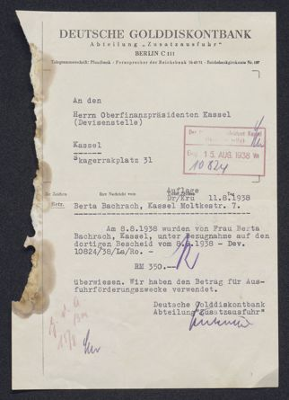
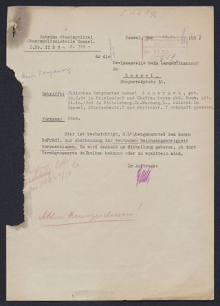
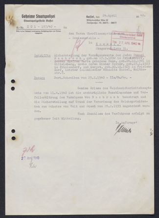
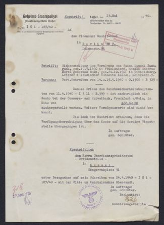
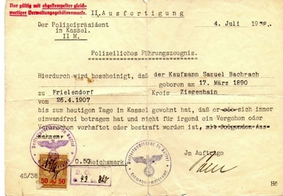
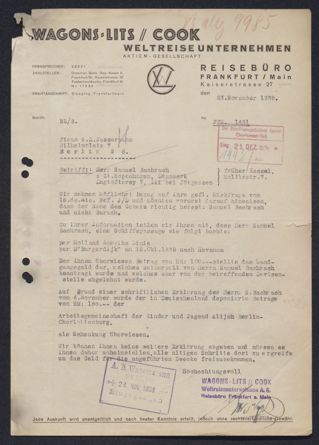
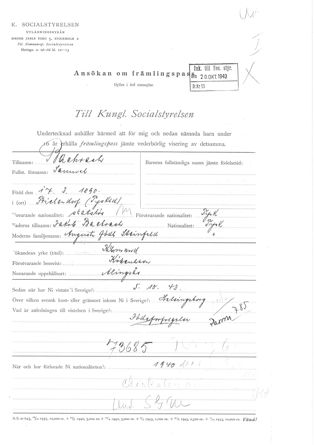
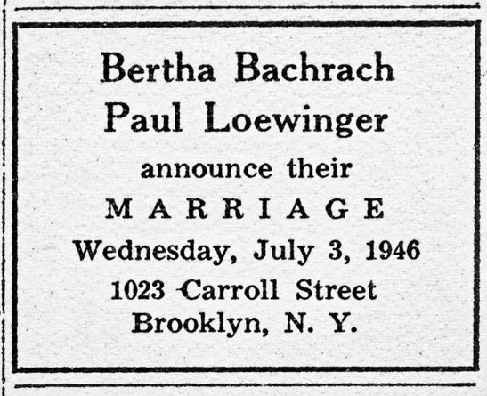
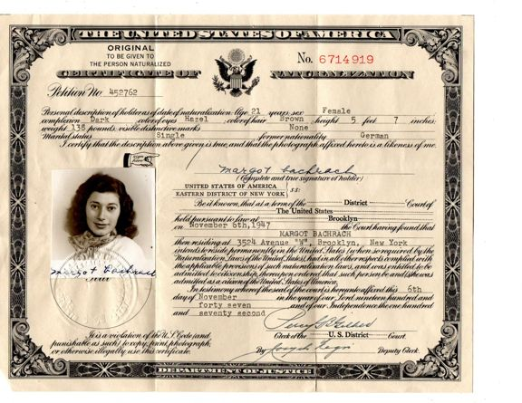
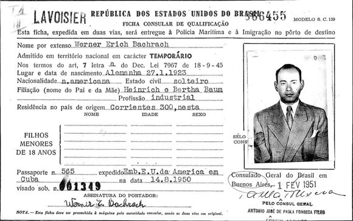
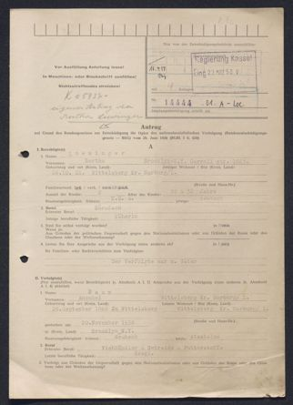
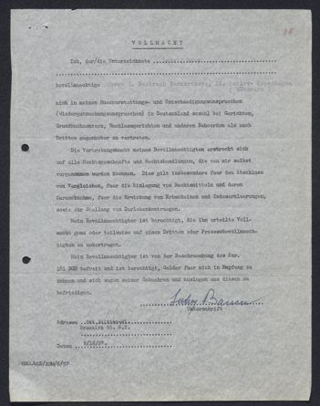
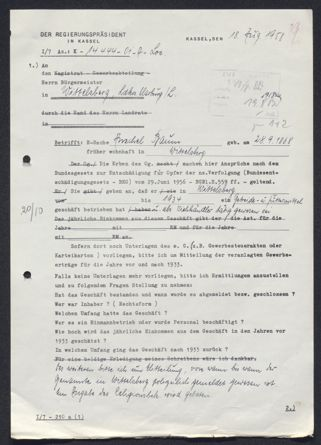
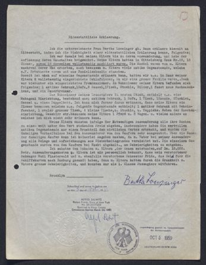
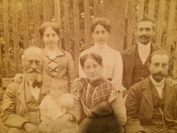
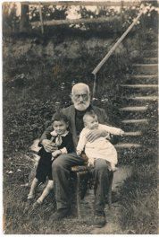
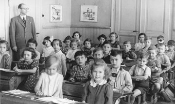
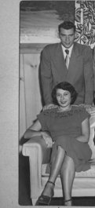
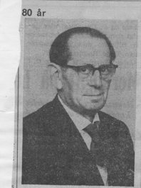
The Torah in Providence
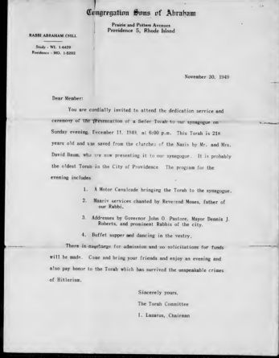
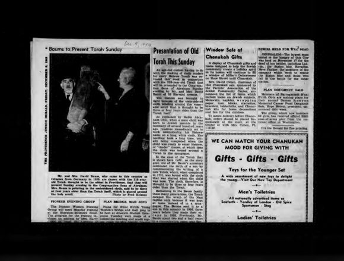
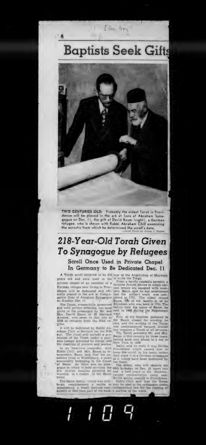
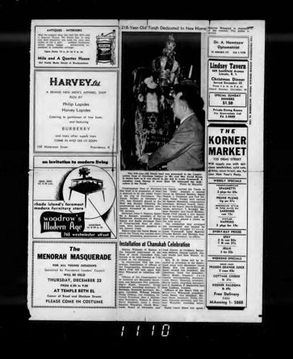
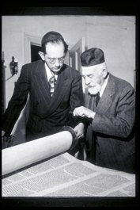
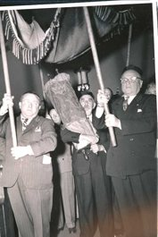
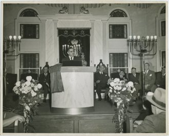